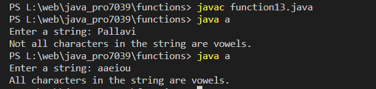

Write a Java method that checks whether all the characters in a given string are vowels (a, e,i,o,u) or not. Return true if each character in the string is a vowel, otherwise return false.
Code:-
import java.util.Scanner;
class a {
public static void main(String[] args) {
Scanner scanner = new Scanner(System.in);
// Ask the user to enter a string
System.out.print("Enter a string: ");
String userInput = scanner.nextLine();
// Check if all characters in the string are vowels
boolean result = true;
// Check if the string is null or empty
if (userInput == null || userInput.isEmpty()) {
result = false;
} else {
// Convert the string to lowercase to handle both uppercase and lowercase vowels
userInput = userInput.toLowerCase();
// Check each character in the string
for (int i = 0; i < userInput.length(); i++) {
char currentChar = userInput.charAt(i);
// If the character is not a vowel, set result to false and break out of the loop
if (currentChar != 'a' && currentChar != 'e' && currentChar != 'i' &&
currentChar != 'o' && currentChar != 'u') {
result = false;
break;
}
}
}
// Display the result
if (result) {
System.out.println("All characters in the string are vowels.");
} else {
System.out.println("Not all characters in the string are vowels.");
}
scanner.close();
}
}
Output:-
